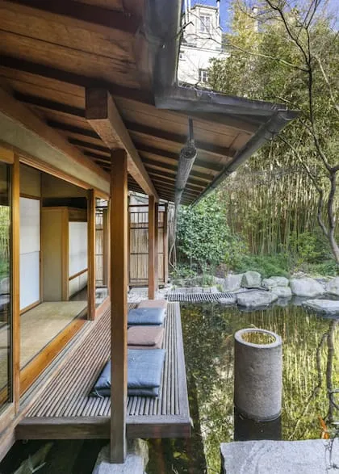

Este proyecto propone la creación de un parque urbano en una zona antes descuidada de la ciudad. Combinando áreas verdes, senderos peatonales y espacios de recreación, "Oasis Urbano" busca ofrecer un respiro en la vida cotidiana y fomentar un sentido de comunidad en el área.